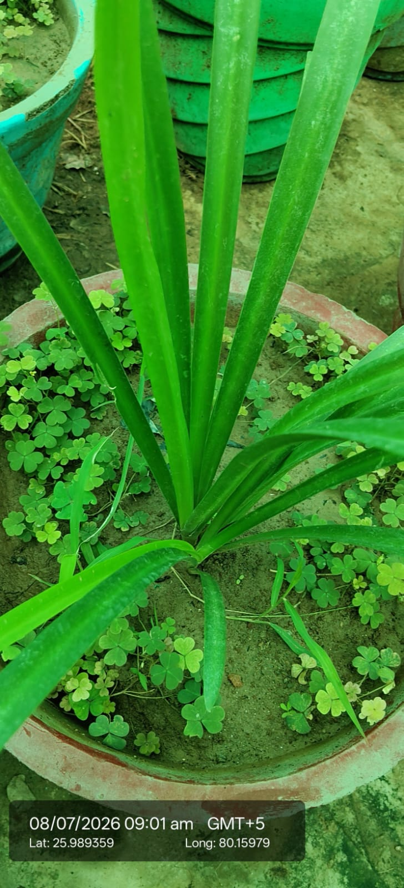

Visual record01 photographs

| Scientific name | Crinum asiaticum |
|---|---|
| Family | Amaryllidaceae |
| Category | Herbs |
Habitat & Growing Conditions
- Native to tropical Asia and Pacific Islands. Widely cultivated across India
- Very common in UP including Kanpur area at your coordinates. Grown in pots, temple gardens, and moist areas like in your photo
- Thrives in tropical to subtropical climate
- Needs well-drained soil and full sun to partial shade. Likes moisture but tolerates drought once established
- Grows 1-2 m tall. Leaves are long, strap-like, glossy green, arranged in a basal rosette from a large bulb. This matches your photo - upright, long, linear, bright green leaves growing from a central point in a terracotta pot with clover growing around it
Economic Importance
- Ornamental: Popular for landscaping and pots. Produces large, fragrant white flowers on tall stalks. Used in gardens and as cut flowers
Medicinal Importance
- Bulbs and leaves used in Ayurveda for inflammation, arthritis, and wound healing. Contains alkaloids with anti-inflammatory properties. Note: The plant is toxic if ingested. Consult a healthcare professional before medicinal use
Field Notes
- Leaves used for thatching in some regions. Planted near ponds for erosion control
- Commercial: High demand in nursery trade for low-maintenance, flowering bulbs
- Safety note: All parts, especially the bulb, are toxic if eaten. Sap can cause skin irritation. Keep away from children and pets.